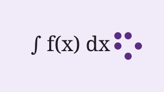

Educazione e inclusione · Anno 2025 · Programma dell'Ateneo
Matematica accessibile: formule leggibili con lo screen reader
Un convertitore gratuito che trasforma gli appunti di matematica in testo leggibile da sintesi vocale e barra braille.
Gruppo MathAccess · Dipartimento di Matematica «Giuseppe Peano», Università di Torino Responsabile scientifico: Cristina Abbà

Presentazione
Per uno studente cieco una formula in un PDF è spesso un'immagine muta. Molti rinunciano ai corsi scientifici per questo.
Il gruppo MathAccess ha sviluppato un convertitore libero che trasforma le formule degli appunti in una forma che lo screen reader legge in modo chiaro, e che si può esplorare passo per passo.
Il software è stato provato con 30 studenti ciechi e ipovedenti di cinque università.
Come useremo i fondi
Uso dei fondi: le voci sommano all'obiettivo
Voce di spesa
Importo
Sviluppo del convertitore
€ 3.600
Prove con 30 studenti
€ 1.200
Stampa braille di esempi
€ 700
Documentazione accessibile
€ 500
Totale (obiettivo)
€ 6.000
Il gruppo di ricerca
Cristina Abbà · Responsabile scientifica, ricercatrice in Didattica della matematica
Lorenzo Gatti · Sviluppatore, assegnista di ricerca
Maria Grazia Pozzo · Consulente per l'accessibilità, persona cieca
Ricompense
Ricompense assegnate
La raccolta è conclusa: le ricompense non si possono più scegliere. Qui sotto quante persone le hanno scelte.
€ 10Il tuo nome nei ringraziamentiNella pagina del software.60 persone l'hanno scelta · posti senza limite
€ 30Segnalibro in brailleCon una formula famosa in braille e in nero.50 persone l'hanno scelta · posti senza limite
€ 75Libretto di esempi in brailleDa donare a una biblioteca o a una scuola.20 persone l'hanno scelta · restano 20 posti su 40
€ 200Formazione per un docenteDue ore online per imparare a usare il convertitore.4 persone l'hanno scelta · restano 6 posti su 10
Aggiornamenti (2)
Resoconto finale: il convertitore è online
Con i € 13.020 (7.020 raccolti più 6.000 dell'Ateneo) abbiamo completato il convertitore e la documentazione. Spese: sviluppo € 6.900, prove € 2.400, braille € 1.400, documentazione € 1.000, presentazioni in tre scuole € 1.320.
Obiettivo raggiunto!
Grazie: con il raddoppio dell'Ateneo possiamo fare prove con il doppio degli studenti.
Commenti (2)
I commenti sono pubblicati nella lingua in cui sono stati scritti.
Enrico T. ·
Uso NVDA tutti i giorni: un convertitore così mi avrebbe salvato l'esame di Analisi 1.
Anna R. ·
Insegno matematica, lo proverò con la mia classe.
Sostenitori (166)
Alcuni dei sostenitori che hanno scelto di mostrare il nome:
Davide S., Valentina R., Stefano M., Laura M., Nicola P., Elisa G., Alessandro Z., Anna R. e altre 158 persone, alcune in forma anonima.